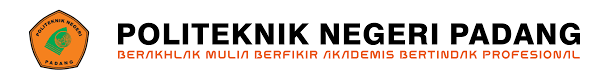

Jurusan Teknologi Informasi menghasilkan tenaga professional tingkat ahli madya di bidang Teknologi Informasi, khususnya pengelolaan informasi berbasis komputer sehingga mampu bekerja di berbagai instasi, perkantoran organisasi dan bisnis modern.
Jurusan Teknologi Informasi memiliki fasilitas yang lengkap seperti Air Conditioner, LED Project, Labor Komputer dengan spesifikasi yang tinggi, ruangan yang nyaman dan lingkungan yang baik saat pelaksanaan pembelajaran
| Nomor | Program Studi | Jenjang Diploma | Akreditasi |
|---|---|---|---|
| 1 | Manajemen Informatika | D3 | Unggul |
| 2 | Teknik Komputer | D3 | Baik Sekali |
| 3 | Teknologi Rekayasa Perangkat Lunak | D4 | Baik Sekali |
| 4 | Animasi | D4 | Baik |